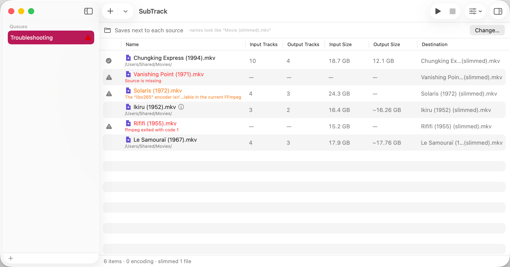

Most files go from added to done without your help. When one doesn’t, the reason is nearly always one of three: the source couldn’t be read at all, the source isn’t where it used to be, or a run started and then went wrong.

Any row that needs attention shows a warning triangle in the status column. Point at the triangle to read why. The line under the file name says the same thing, but it truncates to the width of the column, and an FFmpeg message is routinely wider than that. If it’s cut off, point at it, or open the activity log.
A triangle can also mean the FFmpeg you’re running has no encoder for a codec you chose as a transcode target. That one names the codec, and the fix is in If a codec can’t be encoded.
Choose Window ▸ Activity Log (⇧⌘L).
The log is one plain table covering every queue at once: which queue a file is in, the file, its status, and the full path of the file it writes. It exists mostly for one reason — this is where the complete, untruncated error text lives. A queue row has a single short line to spare; the log has the whole message.
Nothing here is abbreviated. Each entry grows to fit whatever it has to say, and the text can be selected and copied.
If the message doesn’t match anything on this page, that’s worth knowing about — copy it out of the log and report an issue on GitHub.
Everything else on this page is about one file. This one isn’t about any of them: “Not saving” at the right of the status bar means SubTrack cannot write down the queue itself. What you see on screen is right; what’s stored on disk has stopped keeping up with it.
It shows only while that’s true, and disappears the moment a save works again — so a drive that was briefly busy leaves nothing behind. Click it to open the Activity Log, where the whole reason is spelled out on a line of its own — the one marked All Queues, because unlike everything else there it isn’t about a single queue.
There’s no button that fixes this, which is exactly why SubTrack tells you rather than waiting. While it’s showing, anything you add or change may not survive quitting. Check that the disk holding your home folder hasn’t filled up, and note down anything you would rather not set up a second time.